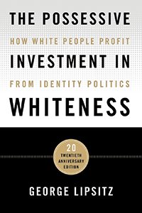

<body bgcolor="#FFFFFF" text="#000000" link="#0000FF" vlink="#CC0000" alink="#CC0000"><center><hr width="350" size="1" align="center" noshade>The twentieth anniversary edition of a widely influential book-now updated to address racial privilege in the age of Michael Brown, Freddie Gray, and Donald Trump<hr width="350" size="1" align="center" noshade><p><a href="https://cdcshoppingcart.uchicago.edu/Cart/ChicagoBook.aspx?ISBN=&&PRESS=temple" target="_top">Buy this book!</a> | <a href="https://cdcshoppingcart.uchicago.edu/Cart/Cart.aspx?PRESS=temple" target="_top">View Cart</a> | <a href="https://cdcshoppingcart.uchicago.edu/Cart/Cart.aspx?PRESS=temple" target="_top">Check Out</a></p><p></p></center><!--none//--><h1 class = "booktitle">The Possessive Investment in Whiteness</h1> <h1 class = "subtitle">How White People Profit from Identity Politics
</h1>
<h3>George Lipsitz </h3>
paper: $32.95, Jul 18<BR>EAN:&nbsp;978-1-4399-1639-1<BR><font color=#990033>Not Yet Published Preorder</FONT><font size=-7><br>&nbsp;</font></p><p class="info">cloth: $104.50, Jul 18<BR>EAN:&nbsp;978-1-4399-1638-4<BR><font color=#990033>Not Yet Published Preorder</FONT><font size=-7><br>&nbsp;</font></p><p class="info">e-book: $32.95, Jul 18<BR>EAN:&nbsp;978-1-4399-1640-7<BR><font color=#990033>Not Yet Published Preorder</FONT><font size=-7><br>&nbsp;</font></p></p></td></tr></table>
<BR> <p class="info">378 pp<BR> 6 x 9<BR> <p class="info"><font size=-7>&nbsp;</font></p><p class="info">
</P><BLOCKQUOTE></BLOCKQUOTE>
<p>George Lipsitz's classic book <i>The Possessive Investment in Whiteness</i> argues that public policy and private prejudice work together to create a possessive investment in whiteness that is responsible for the racialized hierarchies of our society. Whiteness has a cash value: it accounts for advantages that come to individuals through profits made from housing secured in discriminatory markets, through the unequal educational opportunities available to children of different races, through insider networks that channel employment opportunities to the friends and relatives of those who have profited most from past and present discrimination, and especially through intergenerational transfers of inherited wealth that pass on the spoils of discrimination to succeeding generations. White Americans are encouraged to invest in whiteness, to remain true to an identity that provides them with structured advantages.In this twentieth anniversary edition, Lipsitz provides a new introduction and updated statistics; as well as analyses of the enduring importance of Hurricane Katrina; the nature of anti-immigrant mobilizations; police assaults on Black women, the killings of Trayvon Martin, Michael Brown, and Freddie Gray; the legacy of Obama and the emergence of Trump; the Charleston Massacre and other hate crimes; and the ways in which white fear, white fragility, and white failure have become drivers of a new ethno-nationalism. As vital as it was upon its original publication, the twentieth anniversary edition of <i>The Possessive Investment in Whiteness </i>is an unflinching but necessary look at white supremacy.<br>
<P CLASS="top"><A HREF="#top">BACK TO TOP</A></P>&nbsp;
<BR>&nbsp;
&nbsp;<P>
</P><BR>&nbsp;
<H2 class="inpageheading"><A NAME="author bio"></a>About the Author(s)</H2><p><b>George Lipsitz</b> is a Professor of Black Studies and Sociology at the University of California, Santa Barbara. His previous books include <i>How Racism Takes Place</i> and <i>A Life in the Struggle: Ivory Perry and the Culture of Opposition</i> (both Temple). Lipsitz serves as Chair of the boards of Directors of the African American Policy Forum and of the Woodstock Institute and is senior editor of the comparative and relational ethnic studies journal <i>KALFOU</i>.<br>
<P CLASS="top"><A HREF="#top">BACK TO TOP</A></P>
<p><h2 class="inpageheading"><a name="subjects"></a>Subject Categories</h2> <p><a href="http://www.temple.edu/tempress/american.html" target="_top">American Studies</a> <br><a href="http://www.temple.edu/tempress/race.html" target="_top">Race and Ethnicity</a> <br><a href="http://www.temple.edu/tempress/history.html" target="_top">History</a> <br><a href="" target="_top"></a> <br><a href="" target="_top"></a> </p>
</p>
<P>
</P>
<p align="center"><a href="https://cdcshoppingcart.uchicago.edu/Cart/ChicagoBook.aspx?ISBN=&&PRESS=temple" target="_top">Buy this book!</a> | <a href="https://cdcshoppingcart.uchicago.edu/Cart/Cart.aspx?PRESS=temple" target="_top">View Cart</a> | <a href="https://cdcshoppingcart.uchicago.edu/Cart/Cart.aspx?PRESS=temple" target="_top">Check Out</a></p><p><font face="Arial" size="1"><a href="copyright.html" onMouseOver="window.status='Web Copyright Policy';return true;" onMouseOut="window.status=''" title="Web Copyright Policy">&copy;</a> 2018 <a href="http://www.temple.edu" target="new" onMouseOver="window.status='Link to Temple University home page';return true;" onMouseOut="window.status=''" title="Link to Temple University home page">Temple University</a>. All Rights Reserved. http://www.temple.edu/tempress/titles/1418A_reg.html</font></p>